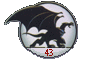
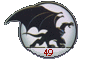

Something Old, Something New
Captain Chavez makes a startling discovery in the precinct attic; Hudson recalls his first true love.

Passions
An exploration of some mature themes, for suitably mature readers only.
Ever After
In 2031, the impossible alliance takes place and two age-old foes become one. Mature readers only.

Where You Need to Be
Lexington's online pen pal wants to meet in person ... and what is Owen up to?

Family Reunion
A sequel to Passions, for mature readers only; Elisa attends a family gathering in Las Vegas and tells all to Beth.

Sins of the Father
Sevarius is determined to save the life of his son, at any cost. Mature readers only due to violence.
Confession
Brooklyn reveals a long-kept secret about events in the episode "Temptation;" for mature readers only.
The Tempest
The year is 1974 and somewhere off the coast of Maine, Halcyon Renard is experimenting with weather control.
The Heist
Vito Draconi is about to make the biggest mistake of his life -- robbing the Illuminati. And Matt Bluestone is about to find out that getting what he wanted isn't what he wanted it to be.
Attraction
A sequel to The Tempest. The year is 1988 and the place is Seattle. When Xanatos and Fox meet again. it's like magic. Mature readers only.
Sterling Silver
Owen underestimates Aiden Ferguson's talent and his life will never be the same.
Kittens
Some uninvited guests crash Maggie's baby shower. Mature readers only due to violence.
Night Moves
Elisa discovers the power of the little black dress. Mature readers only.
Double Date
Thailog turns up playing bass in a rock band, and it's up to Lex and Broadway and their dates to figure out what's going on.
The Eurydice Project
Matt Bluestone doesn't believe in ghosts, magic or an afterlife. He's about to be proven wrong.
A Gargoyles Christmas Special
City sidewalks. Busy sidewalks. It's Christmas time in the city . . .
Angela's Awakening
A tale of coming of age on Avalon. Mature readers only.
A Noble Indiscretion
Prince Malcolm's diary reveals a long-kept secret.
Future Imperfect
Manhattan. No more pollution. No more crime. Almost paradise. Or is it? Lex and Aiden are about to find out.
Black Roses
A series of brutal murders lead Elisa and Matt to wonder: Is Goliath a suspect . . . or the next target? Mature readers only.
Baby Makes Three
Perviously on ER . . . no, wait . . . previously on Gargoyles (a sequel to Ever After).
Mother's Day
Anastasia Renard and Dominique Destine discover they have something in common -- daughters who don't understand that sometimes mother knows best.
Whirlwind
Beth Maza is seeing someone, and she has reason to worry that her father won't approve. Mature readers only.
Lost and Found
A lonely woman finds a very unusual souvenir on the bluffs near Castle Wyvern.
Love Machine
Party favors courtesy of Spank Me Mama. Cake by Bakerotique. Mr. and Mrs. Xanatos host the bachelor/ette parties for Goliath and Elisa. Mature readers only!!!
The Wedding
The big night is finally here! And so are some unexpected guests. Rated PG-13 for Adult Situations.
Fallen Angels
Horatio said it best: "So shall you hear of carnal, bloody, and unnatural acts." Mature readers only! Demona seeks her revenge on Thailog in this sequel to Double Date.
Lead Me Not ...
The dynamic duo of Aiden and Birdie are back in this tale of kidnaping, car theft, magic, and mayhem! Mature readers only.
Romances
Three stories in one! "Girl Talk" -- for those Angela and Brooklyn fans (mature readers only for this one!); "Fairy Favours" -- a look at Owen's private life; and "First Date" -- Preston Vogel and Robyn Canmore go out.
Playing God
Anton Sevarius is back from the dead and he's had an unbelievable makeover.
On the Rocks
[removed at the request of Spider Robinson]Flashie Thing
The message Matt Bluestone leaves on his partner's answering machine mentions alien artifacts and government agents, just before he disappears.Broadway Goes to Avalon
Elektra is persuaded to tell Katherine the truth about her parentage, with tragic consequences.The Wreck of the Margot
Brendan is hosting his sister's birthday party aboard his brand new yacht. Guess where Avalon sends Broadway and Elektra.Menagerie
Another magical blunder from the people who brought you Owen-and-Cordelia-in-love.
Club Gung-Ho
Hudson and Jericho get more than they bargained for when they both sign up for the "complete commando-training vacation experience." Mature readers only due to violence.
The Horror of Innsbrook
"You can tell it's Lovecraftian, because I use the word 'cyclopian' in it." -- Neil Gaiman, April 1995.
Xantasia
David Xanatos returns to a life of crime, meets another woman, and gets shot. Avalon sends Broadway and Elektra someplace fun. And Aiden gets caught with another guy.FoxFire
To save her son from Oberon's revenge, Fox must face some demons from her past. Strong language.
Lyre, Lyre
"It's like 'Gargoyles: The Next Generation' around here." -- Elisa Maza, commenting on the same-day births of a good guy (Orpheus Bluestone) and a bad guy (Bryce Canmore). Flashforwards to the future show their lives and destinies to be linked. Some violence; reader discretion advised.
The Pure and the Profane
Betrayal. Murder. Lust. Obsession. Those who don't like the direction the Demona and Jericho storyline has been progressing should stay well clear of this one! Mature readers only.
Tales From the Skiff
Two short stories for the price of one, that take place before Broadway, Brendan, and Elektra got home from their travels.
Three of a Kind
From beyond the grave, the Archmage reaches out in revenge against the Weird Sisters. Instrumental in his plans: Gabriel's three mates, and Tiffy, Muffy, and Babs. Mature readers only due to violence.
Hotwire
T.J. is having some trouble adjusting to life in the castle, until he, Lex, and Brooklyn go out for some male bonding. Mature readers due to strong language.
Dear Diary
A short look at Aiden's thoughts as she makes a big lifestyle change.
Breeding Season
The thrilling season finale to the ongoing saga, in which the clan prepares for some new arrivals. In two parts due to length. Mature readers only, please.Shameless Plug
It's not Aiden's fault this time. A magical accident sends two gargoyles and one little boy into a world of magic and adventure.Jericho on the Island of Amazon Women
With a title like that, what more needs to be said? Mature readers only!
Ice Queen
Owen Burnett used to wish he knew more about Cordelia St. John's past and family. Now he knows ...Mature readers only due to some adult content and language.

What Might Have Been
Whether 'tis nobler in mind ... One gargoyle's choice makes all the difference in the world.This story is in two parts due to length; rated PG-13 for some adult content and violence.
Cats and Dogs
In the Amazing Oddities show, not all the freaks are the ones on display, and the real thrills are by private arrangement only.Mature readers due to violence, profanity, and sexual content.

The Scottish Rogue
Dead men tell no tales ... but an immortal never forgets.Mature readers due to some sexual content and violence.
In two parts due to length.

Dark Beauty Part One: Pursuit
Hair as white as snow. Eyes as red as blood. Skin as black as ebony.
Dark Beauty Part Two: The Institute
Ebon and Gabriel relate their ill-fated rescue mission.
55 A -- Masks
Sex, distrust, and Machiavellian deception. Mature readers only.55 B -- Demon Whispers
Demona's daydream, or Jon Castaway's nightmare? Mature readers only.
Precocious
Everyone knew that raising Amber Maza would be an adventure. But they had no idea it would be so much, so soon. Some strong language.
The Guardians: Alchemist
The hope for the future may be found in the past.
Indigo
What would you give for the perfect body? Mature readers only, please.
Beth of Both Worlds
The "Party on Avalon" sequel to Whirlwind, first posted in Avalon Mists
Revenge of the Amazon Women
The Golden One is back and ready for a rematch. Mature readers only, please.The Boy With the Healing Hands
A power like Julian's could change the world, but who has the right to decide if, when, and how to use it?Puck Teaser
A light-hearted dare between lovers takes a dangerous and peculiar turn. Mature readers only, please.Damien, Part One: Atonement
The most despicable deeds can be done out of love ... especially if it's a Jericho kind of love. Mature readers only, please.Damien, Part Two: Unholy Alliances
Threats of blackmail by Jason Canmore prompt Demona to open the Grimorum Necronum ... which would be a big mistake even under ordinary circumstances! Some violence.Damien, Part Three: Devil's Night
Little Damien is all grown up and raising hell ... literally. Mature readers only, please, due to violence and some sexual content.Read Christine's announcement of how the decision to go into spinoffs came about
Like what you've read? Try more:
Published works by Christine
Morgan
The Silver Doorway
children's books
The Trinity Bay
horror novels
Sabledrake's
author page on Literotica
-- mature readers only!
Other
fanfiction
Other
stories